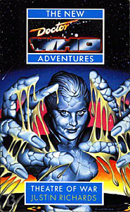

|
Theatre of War
|
BASIC PLOT DOCTOR COMPANIONS MATERIALISATION CIRCUIT Pg 113 The Braxiatel Collection. Back on Menaxus again (offscreen). PREPARATORY READING CONTINUITY REFERENCES "After her once-in-a-lifetime expedition with Rhukk; and her once-in-a-lifetime trip to the Braxiatel Collection." Benny left with Rhukk at the end of Legacy. The Braxiatel Collection was mentioned in City of Death (and briefly in Legacy) and is seen her for the first time, but will be a mainstay of Benny's life in the future. Pg 21 "En route to the Braxiatel Collection to deliver findings and data from the Phaester Osiris expedition." Pyramids of Mars, Legacy. "Sounded boring so stayed behind to do dig with Savaar and Rhukk." Legacy. Pg 24 "The story was that Braxiatel had won the planetoid at cards." We'll eventually see this in Tears of the Oracle. "All you could say for certain about him was that he had an awful lot of money, and that he had spent a huge sum transforming a barren wilderness floating through space with the designation KS-159 into the most desirable residence in the galaxy." The Braxiatel will retain this designation later. In fact, it's remarkable how fully formed all this comes out, right from the beginning. Pg 28 "What a shame that Rhukk could not bring the findings from Phaester Osiris himself." Legacy. Pgs 31-32 "But looking down the length of the gardens ahead of her, she could believe that walking around the whole planetoid was not such a silly notion." This is a feature of the Braxiatel Collection that will be kept consistent in the Benny novels. Pg 32 "A perfect lawn stretched beyond the trees, bounded by the central driveway on one side and high hedges backing on to the parterres of the Small Trianon the other." The Small Trianon will be a regular feature of the Braxiatel Collection in the Benny novels. Pg 34 "There was no reason the TARDIS tracker/locator would not work as effectively from Menaxus as from Osiris" Legacy. "Then she remembered what he had said about the previous expedition, and she thought of her own experiences on Heaven." Love and War. Pg 36 "Down Among The Dead Men - Professor Bernice Summerfield, 2566" Benny's famous book is introduced here. It will go on to be mentioned in many subsequent NAs and Benny novels. Pg 51 "Well, younger anyway. Still young enough to bowl a good Chinaman, but not too old to appreciate the inexplicable splendour of it all." The Fifth Doctor, Black Orchid. Pg 52 "Like Mr Briggs. He was okay." Ace's tutor is likely named after Ian Briggs, her creator. "She thought for a moment of the recent stained face of Julian Winmill's mother, holding his orphaned data pad as the tears splashed on its casing." Legacy "He said I had a propensity for vulgar facetiousness." Borusa, The Deadly Assassin. "She thought about school, about home, about killing Daleks in the Hai Dow system" Ace spent three years fighting Daleks between Love and War and Deceit. Pg 63 "Even the curses of the ancient Egyptian tombs of the pharaohs had turned out to have a deeper, extraterrestrial meaning" Pyramids of Mars. Pg 80 "Phaester Osiris. Probably more interesting now it's ruined than it ever was when Horus was at home." Pyramids of Mars. Pg 81 "The Time Path indicator was locked into their present time" The Chase. Pg 87 "Ace had seen enough flames - many of them dancing around the blackened remains of burning Dalek shells - to know that fire is never still." Love and War, Deceit. Pg 91 "I have been in similar situations myself, even before Peladon. I remember once in Italy -" Legacy, The Masque of Mandragora. Pg 102 "'Surely you can see that I'm an archaeologist?' He leaned forward and whispered conspiratorially, 'I've been told it's written all over me.'" Tomb of the Cybermen. Pg 104 "All three plays of The Oresteia, Death's Bane, Love's Labours Won" The latter is the missing Shakespeare play (companion to Love's Labours Lost) which features in The Shakespeare Code. Pg 122 "But for all the papers and posturing from Brett and his cronies, it remains unproven that a computer can think, even on a conscious level." This is likely Professor Brett, from The War Machines. Pg 123 "I'm sure Blinovitch would have an opinion to voice." Day of the Daleks. Pg 124 "He saw the tenseness of her stance; her almost cat-like movements - as if she could smell the blood on the wind, hear the blood in her ears" Survival. Pg 137 "I have been to Eye of Orion, have been caught in the clutches of the black hole of Tartarus, been hunted through the universe by the Daleks, and played backgammon with Kublai Khan." The Five Doctors, Terror of the Vervoids, The Chase, Marco Polo. Pg 183 "The blotter was headed Custodian of the Library of St John the Beheaded" Shortly to appear in All-Consuming Fire. Pg 211 "I think I'll stick with what's really real, thanks. Once was enough." Conundrum. Pg 237 "They reminded Ace of the chains Midge had used to secure his motorbike." Survival. Pg 273 "Peter Hinton" is very likely an amalgamation of Peter Anghelides and Craig Hinton, future Doctor Who authors Pg 275 "The whole construction looked like a man the size of an Ice Warrior had been stripped to the muscle and bone" The Ice Warriors were first seen in the story of the same title and most recently in Legacy. Pgs 282-283 "The Dalek invasion and the Cyber wars hadn't helped any." The Dalek Invasion of Earth, Revenge of the Cybermen. OLD FRIENDS AND OLD ENEMIES NEW FRIENDS AND NEW ENEMIES The Commissionaire and Klasvik are the two survivors. Lannic's fate is unclear at the end, although she may never have existed.
CONTINUITY COCK-UPS PLUGGING THE HOLES [Fan-wank theorizing of how to fix continuity cock-ups] FEATURED ALIEN RACES Pg 233 Robots. FEATURED LOCATIONS Pg 10 The Dunsinane. Pg 21 A shuttle, 3985. Pg 24 The Braxiatel Collection. Pg 29 Kotosh Station. Pg 40 The Pride of Padrillion The Icoronata Pg 198 Heletia. Pg 220 A delta dart. Pg 215 Inside the dream machine. IN SUMMARY - Robert Smith? |
|
 |